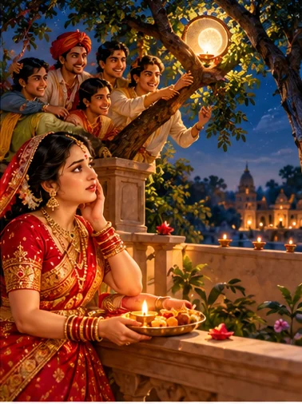
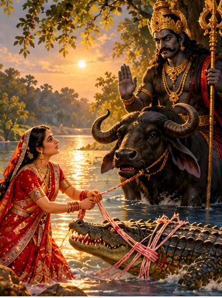
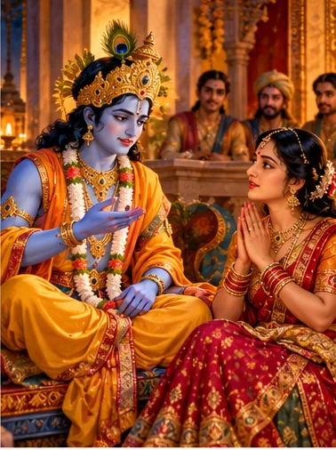
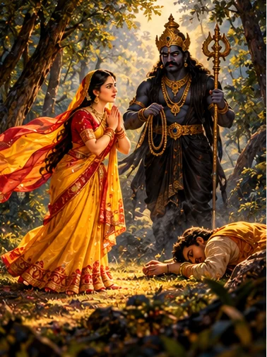
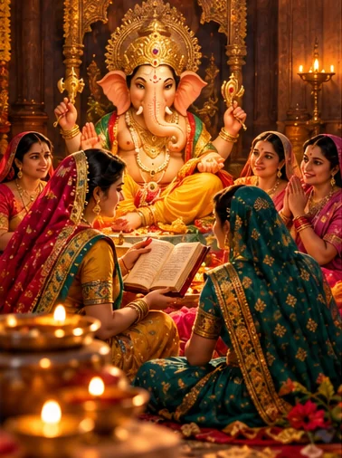
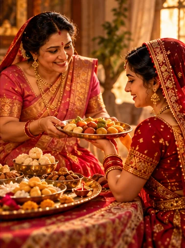
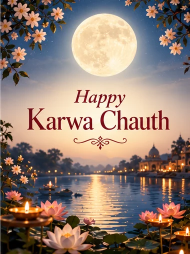

A promise beneath the autumn moon
A festival of devotion, family and waiting
Before sunrise, a kitchen light glows. A mother-in-law has prepared sargi, a plate of food and blessings for her daughter-in-law. Outside, the city is still asleep. By evening, women dressed in festive colours will gather to tell an old story; later, their eyes will turn towards the moon. This is the rhythm of Karwa Chauth.
Observed especially among North Indian Hindu communities, Karwa Chauth is a vrata traditionally undertaken by married women for their husbands’ long life and well-being. The word karwa (or karak) refers to a small earthen vessel, while chauth means the fourth lunar day. The festival falls on the fourth day of the waning moon in Kartik according to the North Indian purnimanta calendar.
Yet the day is more than a sequence of rituals. It brings together relationships between generations, stories about trust and devotion, and the quiet anticipation of seeing the moon. Families celebrate differently, and many couples today also choose to express the day’s spirit through mutual care.
Veeravati and the moon that was not the moon
Why the traditional story warns against deception
One of the best-loved Karwa Chauth vrat kathas tells of Veeravati, a cherished sister with seven brothers. During her first Karwa Chauth after marriage, she returned to her parental home and began the demanding fast. As evening approached, she grew weak and longed for the moon to rise.
Her brothers, unable to bear her suffering, devised a trick. In a widely told version, they placed a lamp behind a sieve or in a tree so that its distant glow resembled the moon. Believing the moon had appeared, Veeravati ended her fast before the proper time.

The story then turns sorrowful. She learns that her husband is gravely ill or has died; versions differ in what follows. Through remorse, renewed observance and divine grace, she ultimately regains her husband’s well-being. The tale is told not as a historical report, but as a family-transmitted vrat katha.
Why is this story retold each year? At its heart lies a warning against mistaking appearances for truth. The false moon is a powerful image: love cannot be protected through shortcuts or deception. The telling also gives families a shared language for patience, sincerity and hope.
Karwa faces Yamraj
The woman who would not surrender her husband to death
Beside a river lived Karwa and her husband. In a widely told folk narrative, he went into the water to bathe, unaware that a crocodile was waiting beneath the surface. It seized his leg and pulled him toward the current. His cry reached Karwa on the bank.

Karwa ran to him. She had no weapon with which to fight the animal, but she took a length of raw cotton thread and bound the crocodile. The impossible strength of this simple thread is the story’s first sign that we are in the world of sacred folklore: it represents her unwavering resolve rather than an ordinary feat of physical force.
With the crocodile restrained, Karwa confronted Yama, the lord of death. She demanded that the creature be punished and that her husband be allowed to live. In many tellings Yama answered that the crocodile’s appointed lifetime was not yet over. Karwa would not accept this answer. She warned that she would pronounce a curse if he refused to protect her husband.
Yama recognised the spiritual force that the story attributes to her fidelity and courage. He took the crocodile and granted her husband a long life. The riverbank, which moments earlier seemed a place of certain loss, became the setting of their reunion.
What makes Karwa remarkable is that she does not merely wait for help. She acts, speaks and challenges the highest authority in the story. The tale is often told to celebrate devotion, but it is equally a story of courage and agency. Its details vary in oral tradition; it should not be presented as a verified historical event or a verbatim passage from a named Purana.
Draupadi asks Krishna for guidance
How a troubled household enters the vrat-katha tradition
In a traditional Karwa Chauth narrative frame, the Pandavas are passing through hardship. Arjuna has gone away for austerities, and Draupadi is anxious about the difficulties facing her family. She turns to Krishna, asking what she can do when even determined effort seems unable to remove their troubles.

Krishna responds by recalling a conversation between Parvati and Shiva. In that account, Parvati asks about an observance that can help a family overcome adversity. Shiva explains Karaka Chaturthi and the importance of observing it with care, leading into the story of Veeravati.
The frame gives Veeravati’s tale a purpose: it is not recited simply to frighten a listener with the consequences of a mistaken moonrise. It offers Draupadi a story of renewed hope after misfortune. Some later tellings conclude that she observed the vrat and the Pandavas’ fortunes improved.
This link is found in vrat-katha compilations and devotional retellings. It should not be confused with a securely identified episode of the critical Mahabharata text. The distinction matters because familiar epic characters often become part of regional festival storytelling.
Savitri follows Yama
A related epic story about wisdom, not merely fasting
In the Mahabharata’s Vana Parva, Savitri chooses Satyavan as her husband despite being warned that he has only a short time to live. When the appointed day arrives, she accompanies him into the forest. As he rests, his life ends and Yama comes to take his soul.

Savitri does not abandon him. She follows Yama and speaks with remarkable composure about duty, compassion and righteousness. Impressed, Yama grants her boons, each time asking her to return. She asks for the restoration of her father-in-law’s sight and kingdom, and later for children. The final request leads to Satyavan’s life being restored, because her wish for children presupposes their life together.
The story is remembered for Savitri’s intelligence as much as her loyalty. Unlike Karwa’s forceful challenge, Savitri persuades Yama through patient reasoning. Both stories imagine love confronting death, but they teach through very different actions.
Savitri and Satyavan belong principally to the epic tradition and to Vat Savitri observances. Some Karwa Chauth collections include the story as a parallel example of steadfast devotion. It is a related narrative, not the original Karwa Chauth katha.
The stories told after the main katha
Why some families finish with a tale of Ganesha
In some North Indian homes, the evening narration does not end with Veeravati or Karwa. An elder also tells a short story of Ganesha, the remover of obstacles. These stories are not identical across families: one popular telling concerns an elderly woman who is offered a boon and wisely asks for blessings that include the well-being of her entire household.

The lesson fits naturally into the gathering. Where the longer stories explore danger, loss and perseverance, the Ganesha tale turns attention to practical wisdom and generosity. A request for blessings becomes a reminder to think beyond one narrow desire.
Because several different Ganesha stories circulate in vrat booklets, there is no single version we can responsibly present as mandatory for every Karwa Chauth puja. Families may follow the telling they inherited.
The humble clay pot and the bonds it carries
What the karwa, sargi and baya signify
The karwa is a small pot, often made of clay or metal, used in worship and in offering water to the moon. Its importance comes not from ornamentation but from the meaning of water, sustenance and care. Some regional explanations connect the vessel with agricultural life and the arrival of the cooler season, though such origin stories are not uniform or firmly established.
Before dawn, many women eat sargi, traditionally given by their mother-in-law. A sargi plate may include fruit, nuts, sweets, feni or seviyan and other family favourites. It is both practical nourishment and an affectionate gesture that connects two generations.

Baya, often gifts and sweets sent by the woman’s parents or exchanged with elders, adds another layer of relationship. These customs show why Karwa Chauth cannot be reduced to a single image of a woman waiting for her husband: mothers, sisters, neighbours and older women often help shape the celebration.
An evening of songs, stories and shared prayer
The community around the vrat
As daylight fades, many women dress in festive clothing, apply mehndi and arrange a puja thali with a diya, flowers, roli, rice, sweets and a karwa. In some Punjabi and North Indian communities, women sit together in a circle, pass decorated thalis and sing while listening to the Karwa Chauth katha.
Worship commonly honours Gauri or Parvati, Shiva, Ganesha and the moon, although the sequence and deities invoked vary by household. The gathering matters: women who may have spent the day fasting are surrounded by conversation, familiar songs and the companionship of neighbours or relatives.
For a first-time observer, the most helpful guide is often an elder in the family. There is no single universally binding arrangement of every item or every song.
The moment everyone waits for
Why the moon is seen through a sieve
At last, the moon rises. In a familiar North Indian custom, the woman views it through a sieve, offers water (arghya) towards it and then looks towards her husband. He may offer the first sip of water and food to end the fast.
The sieve, diya and moon make a memorable image, but the custom is not identical everywhere. Some families use a different sequence; some do not use a sieve. The moon marks the completion of the vow, while the exchange of water and food becomes a personal expression of care.
The moon’s rise depends on location, weather and the horizon. A time calculated for Delhi should never be used as the moonrise time in Rotterdam, London or New York. Check a local panchang and local astronomical moonrise information.
One festival, many family traditions
How the celebration changes across communities
Karwa Chauth is particularly associated with Punjab, Haryana, Rajasthan, Delhi, Uttar Pradesh and nearby North Indian regions. In Punjabi households, sargi, thali gatherings and songs are especially visible. In Rajasthan, stories of Karwa and other local forms of Gauri worship may be emphasised. In Uttar Pradesh, the vrat katha and family puja take locally familiar forms.
Its popularity has also travelled through migration, films and social media. That wider visibility should not make us assume that every Hindu family has always observed it. Many communities have different festivals and vows associated with marital well-being.
When a festival travels abroad, the details may change: families arrange video calls with elders, gather with friends, or adapt the timing to their local moonrise. The strongest continuity often lies in the story and the relationships, rather than in perfect reproduction of every ritual object.
Devotion should never require harm
Health, choice and changing perspectives
The traditional nirjala fast avoids both food and water until moonrise. Such a fast can be unsafe for some people, especially those who are pregnant or breastfeeding, have diabetes or kidney conditions, take certain medicines, or are prone to dehydration. Anyone with medical concerns should seek professional advice rather than feel obliged to follow a strict fast.
Participation is a personal choice. Some families adapt the observance with water, fruit or prayer alone; others do not fast. Couples may also mark the day through shared acts of kindness, gratitude and support. These contemporary choices need not erase the cultural meaning of the festival.
A useful question for any tradition is not only “How was it done?” but also “What value was it trying to preserve?” Karwa Chauth can be approached as an occasion to care for one another, not to measure devotion by physical hardship.
When the moon finally appears
The meaning we carry home
At the end of the evening, the diya is still glowing, the stories have been told and the long wait is over. Someone offers a glass of water; someone smiles with relief. The ritual ends in a small act of tenderness.
Whether a family observes every customary step or simply shares a prayer, Karwa Chauth offers an opportunity to remember that relationships are sustained through trust, honesty and everyday care—not by one evening alone.
May this Karwa Chauth bring health, companionship, understanding and happiness to every home.

Sources and important notes
Veeravati is presented as a traditional folk katha, not attributed to an unverified ancient text. Moonrise and puja times vary by location.
- Panchang Guru — Karwa Chauth 2026 date and New Delhi timings
- Karwa Chauth vrat katha — Veeravati, identified as folklore
- New York temple cultural guide — Sargi, baya and puja
- Economic Times — regional Karwa Chauth practices, 2026
- Veeravati and Karwa — traditional katha and textual notes
- Savitri and Satyavan — epic narrative background